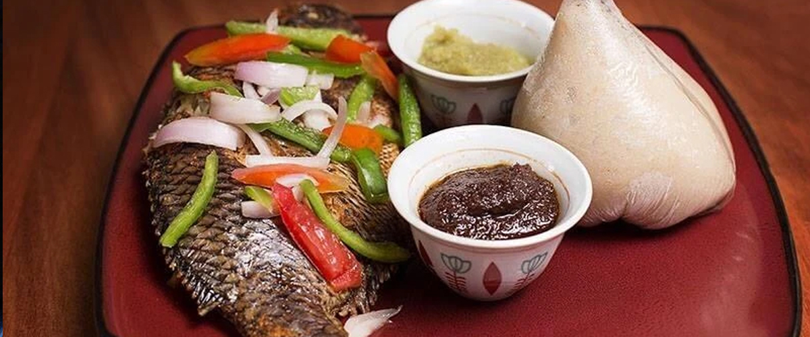

Banku

How banku is Prepared
Ingredients
- Corn dough
- Cassava dough
- salt
- Fish
- okro
- meat
STeps To Cook
-
Place the pot on the stove at medium heat and mix continuously. As the porridge cooks, the porridge will thicken till it comes together.
-
This is where I suggest you watch the video to know how to properly make banku.
You will need the end of a wooden spoon for this. The direct twi translation for what you will be doing is “driving” the banku.
The idea is to make sure there are no lumps. You will do this for about 5 minutes
-
Once you have a ball, poke a few holes into the dough, and about 1/4 cup of water to the pot or enough water to cover the holes NOT submerge the banku. Cover the pot and let the banku cook for about 10 minutes at medium-low heat.
This is what will actually cook the banku and will change the texture and colour.
If you double or triple the banku dough, let it cook for up to 15 minutes.
-
The banku will go from white to a translucent white and it will become a lot less grainy.
-
After, remove the cover and continue to drive the banku for another five minutes till the banku is really nice and smooth.
-
At this point, it is ready. Scope with a wet plastic spoon into a bowl to shape.
I know some use plastic wrap to shape it but I do not think that is good nor healthy for you.
-
You should let it cool down for a bit before eating so you do not burn yourself.